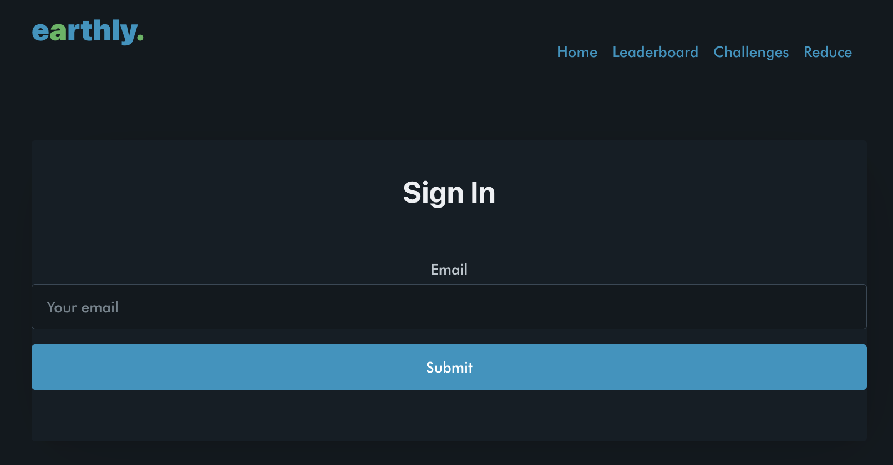

Earthly
Motivated by the pressing issue of climate change, we embarked on a project aimed at addressing the individual's role in combating global warming: their carbon footprint. Our inspiration led us to create a website that empowers people to assess and compare their carbon footprint, thereby encouraging them to make lifestyle changes for a more sustainable impact. The website allows users to upload their travel data, unveiling the carbon implications of their choices, whether it's opting for public transportation, cycling, or walking. Users can also gauge their carbon footprint against local peers, engaging in challenges to keep it below specific levels. Additionally, there's an informative section explaining the broader impact of carbon footprints on global warming, along with suggestions for reducing them. We built this platform primarily using React and JavaScript for the front-end, with Supabase and PostgreSQL supporting the back-end. While we encountered challenges, including mastering row-level security and managing time constraints, we were able win the "Best Hack for Environmental Sustainability" award out of 91 projects by 500 participants over 24 schools. Looking ahead, we plan to expand Earthly into a mobile app and integrate it with smart devices for automated data tracking. Our vision extends beyond transportation to encompass other environmentally impactful activities, such as energy consumption and temperature control. You can visit the site here and see the code here!